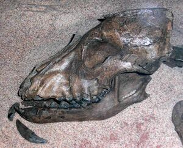

история ⲥⲟⳝⲁⲕ
Как человек приобрел себе верного друга и помощника? По распространенному представлению, в древние времена в условиях конкуренции стаи наименее пугливых волков постепенно переходили на питание отбросами возле человеческих жилищ. Заинтересованные в удобной нише хищники становились менее опасными для людей. Дружелюбные особи вступали с людьми в контакт. Иногда люди брали щенков, и выросшие среди людей волчата считали их членами своей стаи Связи укреплялись, и через некоторое время уже мог происходить отбор более уживчивых особей.
Одна из слабых сторон имеющихся представлений об одомашнивании волка — недостаточная определенность в отношении времени и места протекания процесса. А эти характеристики не были формальными координатами.
Когда?
В середине XIX в(19). в раскопках памятников первобытности, наиболее известными из которых были свайные поселения швейцарских озер, начали попадаться кости собак. Вначале они касались эпохи бронзы и неолита, а в XX в(20). такие находки стали нередкими на мезолитических стоянках, древность которых доходит до грани голоцена с плейстоценом (около 10 тыс. лет назад). К мезолиту и относили время появления собак, хотя отдельные случаи склоняли к предположению: не произошло ли это раньше? Наконец, раскопки последних десятилетий прошлого века и начала нынешнего на Ближнем Востоке и в Европе увенчались обнаружением костей собак конца верхнего палеолита (13–11 тыс. лет назад*). Их изучение и разработка проблем появления нового вида находились полностью в руках палеозоологов. Теперь в литературе по ранним собакам преобладают исследования генетиков. Под занавес прошлого тысячелетия произвела фурор работа, авторы которой, изучив митохондриальную ДНК современных волков Евразии, Северной Америки и собак разных пород, пришли к выводу, что отделение общего предка собак от волка произошло гораздо раньше — 135 тыс. лет назад . Новость граничила с чудом. Она вызвала энтузиазм и попытки специалистов пересмотреть устоявшиеся позиции. Расчеты велись на основе генетических различий волков и койотов, возникших у них после разделения материнского вида около 1 млн лет назад. Доля отличий, приходящаяся на единицу времени, послужила «молекулярными часами», которые указали на годы, прошедшие после обособления собак от волков.

Генетические данные
Ископаемые остатки доисторических собак найдены в человеческих пещерах по всему миру. Ранее на основании археологических находок чаще всего учёными назывались даты одомашнивания собак 13—15 тыс. лет до н. э. Сейчас ряд исследователей считает, что собаку приручили ещё в начале верхнего палеолита представители ориньякской культуры.

Так, палеонтологи Королевского музея естествознания[фр.] Бельгии во главе с Митье Жермонпре (Mietje Germonpré) указывают дату 31,7—36,5 тыс. лет до н. э. Эти выводы сделаны на основании последних находок, остатков доисторической собаки в пещере Гойе (Goyet). Примечательно, что строение черепа доисторических собак значительно отличается от доисторических волков. Ископаемые остатки найдены также у Алтайских гор в Сибири, возраст домашней собаки из алтайской пещеры Разбойничья, найденной ещё в 1975 году Н. Д. Оводовым, был оценён в 33,5—34 тыс. лет. В Чехии (Пршедмости) возраст остатков датируется 24—27 тыс. лет до н. э., Украине — 15 тыс. лет до н. э., в Америке, штат Юта — 11 тыс. лет до н. э., Китае — 7—5,8 тыс. лет до н. э. Отсутствие более ранних археологических находок предков современных собак может быть связано с отсутствием мест захоронения, поясняет доктор Пол Такон, главный научный сотрудник Австралийского музея ископаемых и минералов. Первые захоронения возникли после того, как древние люди стали образовывать стоянки и поселения, до этого человек вёл кочевой образ жизни. Из археологических находок следует, что древние собаки варьировались по размерам. Остатки собак палеолита высотой 45—60 см были обнаружены на Ближнем Востоке, в Ираке, Израиле (Хайоним[англ.]), Сирии, крупных собак (выше 60 см) нашли в Германии (Kniegrotte), в России (стоянка Елисеевичи 1), Украине (Мезин), маленькие, менее 45 см, в Швейцарии (Hauterive-Champreveyres в Отриве[англ.]), во Франции (Сен-Тибо-де-Куз[англ.], Pont d’Ambon в Бурдее), Испании (Erralla в Сестоне) и Германии (Оберкассель[англ.], Чёртов мост в Обернице[нем.] и Ёлькниц[нем.]). Изучение износа зубов псовых возрастом 28,5 тыс. л. н. из Пршедмости показало, что они принадлежали двум разным типам — волкоподобным собакам и протособакам, имевшим разный рацион питания. В диете протособак было больше костей, которые они подбирали у границ человеческого поселения, в диете же волкоподобных собак было больше мяса.